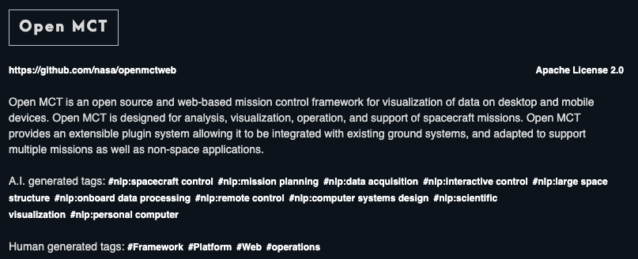
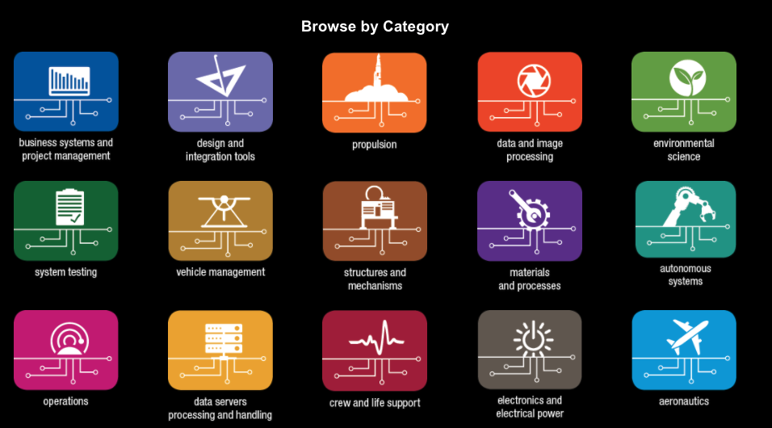

NASA's Public
GitHub Organization
This GitHub organization is intended to publicly host NASA code that has been SRA-approved for open source. You can review the SRA (software release authority) process for getting open-source approval on https://code.nasa.gov/#/guide.
Only NASA staff can be a member of the NASA org on github.com and release code in github.com/nasa org.
If you are a NASA civil servant or contractor and would like to be added to the Public NASA GitHub Org, you will need to submit the AGCY NASA Github Collaborator Form NAMS request (https://nams.nasa.gov). This requires you to be behind the NASA firewall. If you were a member several years ago and recently found you are no longer a member, please see this note.
Only members have rights to directly edit code in a github.com/nasa repository. Everyone else will need to submit a pull request. We highly encourage pull requests from the public!!! However, please note that not all repositories are actively maintained.
Members of the public can not attain and do not need collaborator status. You don't need any special status to submit pull requests or add issues.
For information on how to become a member of the NASA Org (you need to be a NASA civil servant or contractor with access to systems inside the NASA firewall), please see the instructions on code.nasa.gov/#/guide.
To ensure mandatory policies are followed, NASA org members are not given the full admin rights you might be used to on your personal github.com accounts. However, by using teams, team owners, collaborators, and outside collaborators roles we can make the experience pretty quick and easy.
Only org owners have the ability to create new repositories and bring new users in as members of the NASA github org.
We currently have two active owners in the org:
We do not give out admin rights on any NASA Github repos for reasons stated above. If you want a new repo created or want to edit settings on an existing repo that require admin access, please contact one of our org owners. Without admin rights on a repository, you'll still be able to make any code changes yourself as long as you're a collaborator on that repository or a member of a team whose participants are collaborators by default.
If you need for a new repository (and it has gotten SRA approval) please either submit a modification to your NAMs request or email one of the Org Owners with the follwing information:
If you are joining for the first time and need a repository created, you can also include the same information in your NAMs request for access inside the more information box.
You can learn more about the software release authority process on the Guide page of code.nasa.gov.
Teams are effective ways of managing repository access privileges for an entire group of users. Only org owners can create and remove teams, but we now allow users to be team maintainers. Team maintainers have permissions to add and remove users to their teams from the population of people who are already NASA org members.
Note: Team maintainers are technically able to add a user who was once in the NASA org back onto their team (thus reinstating the user in the org). However, we do not allow this and will remove maintainers who are found in violation. If you need a past member to be reinstated in the org, contact an org owner and request to be added as an outside collaborator.
Github also has a role called "collaborator". This is someone who doesn't have repository ownership or admin rights but can push edits to code directly without doing a pull request.
If you would like to add a NASA staff member who is a member of the NASA org as a collaborator on a single repository, we still suggest you contact the NASA org owners mentioned above about setting up a TEAM for that single repository instead of adding people one by one. Teams result in less requestes (and therefore waiting) on NASA org owners for actions. We are sorry you don't have normal full ownership rights. It is because everyone with write access needs to be approved NASA user. If you had normal repository owner right, you could add any github user.
Only on a rare case-by-case basis we will allow non-NASA users to be added to the org as Outside Collaborators. You can collaborate without this status via forks, branches, and pull-requests. If you fork a repository, you can make changes and then submit back a pull-request. A repository maintainer can then approve those changes. You do not need formal outside-collaborator status for this!
Please reach out to us if you have any questions.
Need: If you need to be added to the NASA org on github.com
Process: Create a personal github account and then request to be added as a Github Collaborator via a new or modified NAMs request. Please include your github id in the request.
Need: If you need to add a new open-sourced repository to github.com/nasa that has already been approved via the software release authority process.
Process: Make or modify a request to start a new repository in github.com/nasa via the NAMs request. Please give it a useful name and good documentation! We'll create a blank repository for you to put the code into.
Need: If you need to create a new team for managing who has access to make changes on a particular repository or group of repositories.
Process: Modify your NAMs request to request the team creation or email the two owners above. Give team name and which repositories team members should be given access to.
Need: If you need to add a new member to an already established team.
Process: Send an email to the Team owner, modify your NAMs request, or email the Github Owners in that order of preference.
The reason for NASA open source code existing in different places boils down to different requirements, both requirements of those writing the code and requirements from above.
Although NASA staff are highly encouraged to release open source software on github.com/nasa as that is where most people look so it ensures higher potential reuse, they are not absolutely required to use that org account. A common reason code may exist under other orgs is that the software is jointly maintained by non-NASA persons or the code was developed by non-NASA persons through a NASA grant.
To encourage disoverability, please use the #NASA topic tag on any GitHub or GitLab repositories not under github.com/nasa.
There are several hundred NASA open-source code repositories and as previously noted, not everything is on github.com/nasa. To improve your chance of finding something useful to you, we suggest you use code.nasa.gov and software.nasa.gov. These sites host metadata descriptions for nearly all of the officially open-sourced code.
Code.nasa.gov feeds into https://code.gov, which holds open source code from across all federal government agencies. It is mandated by Congress and only holds standardized metadata about the code.
Code.nasa.gov only shows open-source software. For government-source and patented software, see software.nasa.gov
Please make sure any repos added to github.com/nasa are also tracked in code.nasa.gov!
Code.nasa.gov uses both human and A.I. generated tags to help users find NASA open source that is useful for their goals.
Software.nasa.gov is part of the larger https://technology.nasa.gov/ that also covers patents and spinoffs. The NASA's Technology Transfer Program ensures that innovations developed for exploration and discovery are broadly available to the public, maximizing the benefit to the Nation. Whether you're looking to start a new company, enhance an existing product, or create a new product line, you can gain a competitive edge in the marketplace by putting NASA technology to work for you.
The information on software.nasa.gov is presented in a way that leverages NASA's technology taxonomy, so if you want to see an aggregate view of NASA software categories, it is a good place to visit.
It also includes some older software products that are only available as downloadable zip files as well as software that must be requested individually as they are only open to US persons or are tied to a patent.
In addition to the emails listed above, you may leave an issue on this repository. We will use those questions & answers to eventually make a FAQ section on this page.